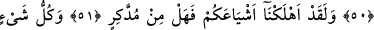
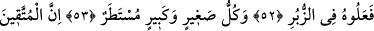
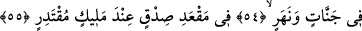

BİZ, HER ŞEYİ
BİR ÖLÇÜYE GÖRE
YARATTIK
49. Biz, her şeyi bir ölçüye göre yarattık.
50. Bizim buyruğumuz, bir anlık bakış gibi, bir tek sözden başka bir şey değildir.
51. Andolsun biz, sizin benzerlerinizi hep helâk ettik. Düşünüp ibret alan yok
mu?
52. Yaptıkları her şey kitaplarda (amel defterlerinde) mevcuttur.
53. Küçük büyük her şey satır satır yazılmıştır.
54. Takvâ sâhipleri cennetlerde ve ırmakların kenarlarında,
55. Güçlü ve Yüce Allah’ın huzurunda hak meclisindedirler.
“Biz” eşya namına ne varsa “her şeyi”, “tekvin” sıfatına bağlı olarak, hikmetin
gerektirdiği gibi “bir ölçüye göre yarattık.” Âyetteki “kader,” “tayin ve takdir”
anlamındadır. Takdir de, yaratılmasında fayda olan bir şeyin sûretini, şeklini ve zâhirî
ve bâtınî sıfatlarını, niteliklerini hikmetin gerektirdiği gibi özel bir ölçü ile
düzenlemektir. Yahut “kader”, başkası ile değiştirilemeyecek şekilde meydana gelmeden
önce levh-i mahfûz’da yazılı olarak belli bir ölçü içinde yarattık, anlamına gelir.
Allah bir işe hüküm verdi
Ve kalemin mürekkebi kurudu.
“Levh-i ezelîye itâat et ve sus.
Çünkü kalem neyi yazmışsa o artık bâtıl olmaz
Bu açıklamalardan sonra, kaderden maksad, Allah’ın bir şeyi ezelî ilminde tayin ve
takdir etmesi ve kader sahifesine yazmasıdır. Bu da kazâ kavramının yanı başında
kullanılan kader kavramıdır. Böyle olunca kazâ, bütün yaratılmışların toplu halde levh-i
mahfûz’da bulunması olayıdır. Kader ise, bütün şartları oluştuktan sonra bir şeyin var
olup görünür halde bulunmasıdır. Bu sebeple Kader’e halk etmek denmiştir. Çünkü